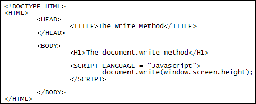
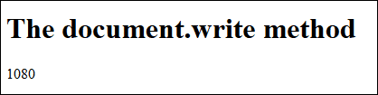
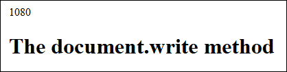
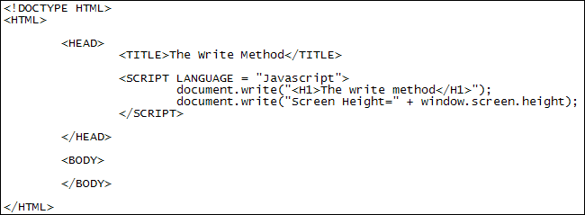
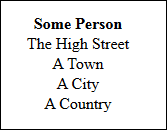

Document Object Model - the DOM
The Document is another Window object you can manipulate. It's quite a powerful object as it refers to just about all the elements you can have on a web page (forms, links, images, text, HTML code, etc). This means that you can use Javascript to get at HTML elements, amend them, and add new ones. This is quite advanced stuff, however, and we'll only go through a few of the document objects in this beginner's book. But to get an idea of just how many document properties and methods are available, have a look at this page: https://developer.mozilla.org/en/DOM/document. Whole books have been written on the subject!
One really useful document method is write. We'll take a look at that now.
document.write
The document's write method can be used to insert text onto your web page (this text can actually be HTML elements). Try this as an example:
- Create a new HTML web page from your template
- Save it with the name write_method.html
- Add the following H1 heading to the HTML: <H1>The document.write method</H1>
- Put two SCRIPT tags in the BODY section of the HTML
- Between the two SCRIPT tags, add the following:
document.write( window.screen.height );
(Notice the semicolon at the end of the line. We'll use them to separate each line of code from now on.)
Your new HTML page and Javascript code should look like this:

Save your work and open up the web page in a browser. You should see this:

Instead of an alert box, we're now writing the screen height directly to the web page. (Your screen height may well be different.)
Now cut the Javascript from the BODY section and paste it into the HEAD section of the HTML. Save your work and refresh the page in your browser. You should see this:

The reason the screen height is now at the top is that the code in the HEAD section gets executed first. But the browser doesn't wait until the whole page loads - it executes the Javascript in the HEAD section first. This contained the document.write method. Because the write method writes to the page then this happens before any HTML is displayed.
Put the Javascript code back into the BODY section. Amend your code to this:
document.write("Screen Height=" + window.screen.height);
What we've done here is something concatenation. This just means joining strings of text together. We've added some direct text between quotation marks. After a plus symbol ( + ) we then have the screen height code. The plus symbol when used like this means "join together". You can use it as many times as you want. For example:
document.write("SH=" + window.screen.height + " SW=" + window.screen.width);
The SH and SW above obviously mean Screen Height and Screen Width. But note where all the plus symbols, commas and spaces are. Get your plus symbols and/or commas wrong and your code won't work.
You can use HTML tags with concatenation. For example, if you want to spread things over two lines, you can use the BR tag. Like this:
document.write("SH=" + window.screen.height + "<BR>" + "SW=" + window.screen.width);
The BR tag is surrounded by quotation marks. You need the quote marks for any HTML that you insert using the write method.
You can use document.write as many times as you want. In the code below, we have moved the SCRIPT tags back to the HEAD section. We then used document.write twice: once to add the H1 line, and once to add the text below it.

Try these two exercises to get the hang of document.write.
Exercise
Use concatenation with document.write to create the following in your browser:
We used document.write twice here. The first one wrote a H1 heading. The second one combined the text "Your browser is set to:" with window.navigator.language. We also have bold text for the browser language (your language may be different - it depends where you are in the world). Of course, you'll need to know what the HTML tag for bold text is!
Exercise
Use document.write to create an address like the one below:

This address is centre aligned in the browser, with the first line in bold. We used document.write seven times. Five of those seven times are for the address. The other two are used to get the centre alignment. So you start with:
document.write("<P Align=center>");
And the last line is:
document.write("</P>");
What this does is to get you a paragraph with the alignment. The other five uses of document.write are for inside of these two.
In the next lesson, you'll learn about Javascript variables.